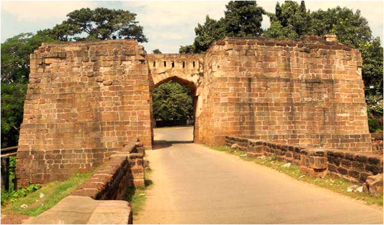
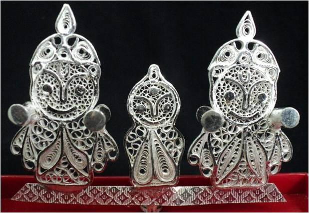
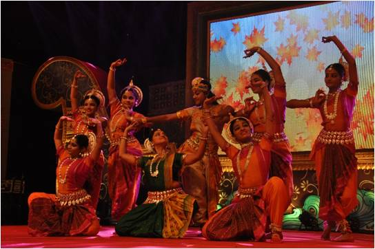
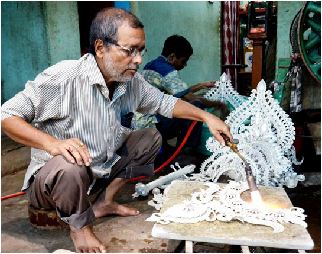
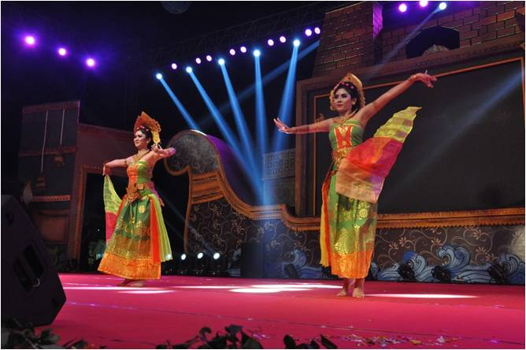

Since Cuttack was first ruled by the Keshari Dynasty followed by the Mughals, the Marathas, and the British, its a melting pot of various cultural influences.
its home to several significant Hindu religious shrines like the Katat Chandi Temple as well as a prominent Gurdwara and a Jama Masjid.The culture of Cuttack is
predominantly similar to that of other old cities in the state of Odisha.The people of Cuttack celebrate several festivals, with Baliyatra ( Organized by the
District Administration of Cuttack ) being the most popular and grandest Baliyatra, a trade fair is reported theb second largest in Asia. There was a time when
the merchants od cuttack traded with South East Asisn traders. The name Baliyatra is dervied from the island of 'Bali' which used to be a hotspot for merchants
from Odisha.


About. Diverse, vibrant and utilitarian the art and craft of Odisha range from- Stonework, silver Filigree, Woodcraft, Applique work, brass and bell metal work,
dokra casting, horn work, pattachitra, paper Mache, terracotta, tie & dye textile in Cotton, tessar and silk and many more..........



-:Trade Fair:-
BaliYatra, one of Asia's Largest open Trade Fairs, spread across 100 acres, is a week-long anuual affairs held in Cuttack.It is an extravagaza of art, culture, and
technology, and is incomplete with special cuisine that the people of the state await all year to devour. At this grand-level trade and commerce fair, pan-india
Bussinesses from different industries promote their product and services, attracting major sales and generating revenue.
The name of the city which the fort has the reference to the ancient Barabati Fort located there. Cuttcak is known as the Millennium city due to its history of
1000 years. its also called the silver city as its famous for its exquisite filigree works Baliyatra, the most popular festival of cuttack os organized by the District
Council of cultureunder the chairmainship of collector, cuttack. its one of the biggest open-air trade fairs in Asia. its commemorates the rich maritime history of the
state in which traders of Odisha called Sadhabas used to sail their masted wooden boats(Boitas) through the sea to south East Asian island including the Indonesia island
Baliyatra katak Ustav 2022 will be held from 08th to 16th of November 2022 on the picturesque bank of River Mahanadi at Cuttack...
This BaliYatra katak Ustav 2022 is going to be held after two years of the pandemic Covid, the presence of visitors at this festival is going to be more than in the
previous year. BaliYatraacts as a meltingpot for people of all age groups, classes and communities who came togather and revel in a celebration of age-old culture
traditions while enjoying tasty local foods and buying goods of their choice. it provides a huge market for merchandies of all types. Hence, BaliYatra offers a golden
opportunites for traders to do their bussiness and for corporates to showcase their brands.......
Contact us
0671-2500100 (ofc.) 2300001 (Res)
Fax: 0671- 2305503(res)
Email: dm-cuttack@nic.in
Contact for boking plots, promotions & advertisements
7008337140 |
9438915771 |
8328938348
Privacy |
Terms Of Use
Connect us with
Copyright © 2022 baliyatra.com . All Rights Reserved.